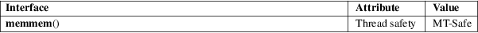

memmem − locate a substring
Standard C library (libc, −lc)
#define
_GNU_SOURCE /* See feature_test_macros(7) */
#include <string.h>
void
*memmem(const void
haystack[.haystacklen], size_t
haystacklen,
const void needle[.needlelen],
size_t needlelen);
The memmem() function finds the start of the first occurrence of the substring needle of length needlelen in the memory area haystack of length haystacklen.
The memmem() function returns a pointer to the beginning of the substring, or NULL if the substring is not found.
For an explanation of the terms used in this section, see attributes(7).

None.
musl libc 0.9.7; FreeBSD 6.0, OpenBSD 5.4, NetBSD, Illumos.
In glibc 2.0, if needle is empty, memmem() returns a pointer to the last byte of haystack. This is fixed in glibc 2.1.
bstring(3), strstr(3)